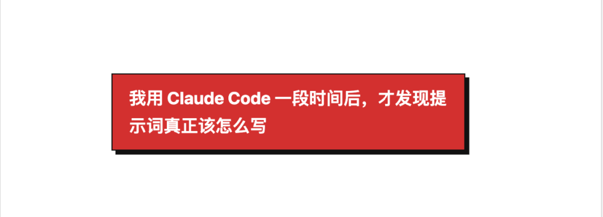

（LetAiCode - AI 编程助手 - 复制到浏览器打开）
https://letaicode.cn/?aff=RBurNc
大家好呀，我是 Lazy熊。
先说结论：
很多人用 Claude Code 总觉得“差点意思”，不是因为它不够强，而是因为任务没下对。
你只丢一句“帮我修一下 bug”“帮我看看这段代码”，它当然也能回。
但这种回法，很多时候更像在猜，而不是在协作。
我自己这段时间一直在用 Claude Code 修 bug、补功能、看代码、重构逻辑，来回试了不少次之后，我越来越确定一件事：
Claude Code 好不好用，关键不在会不会问，而在会不会派活。
所以这篇文章，我不讲太虚的东西，就直接把我自己最常用的提示词技巧和模板分享给大家。
1. Claude Code 好不好用，关键不在“会不会问”，而在“会不会派活”
很多人刚开始用 Claude Code 时，习惯其实很像在搜索。
遇到一个问题，顺手就丢一句：
“帮我看看这段代码。”
“帮我修一下这个 bug。”
“帮我优化一下。”
“帮我写个页面。”
这些话不是不能用。
但问题是，它们太像一句顺口话了。
你自己脑子里可能很清楚：
现在真正要解决的问题是什么 这是在什么项目里 哪些地方能改，哪些地方不能动 你是想先分析，还是直接修改 你最后想拿到思路、代码，还是完整方案
可 Claude Code 不知道。
这些你不说，它就只能自己猜。
而它一旦开始猜，结果就很容易不稳定。
所以我现在越来越觉得：
好的提示词，不是让 Claude Code 更强，而是让它少猜、少跑偏。
2. Claude Code 更适合“协作式使用”，不是“问答式使用”
很多人现在还是习惯“我问一句，它答一句”。
这种方式也不是完全不能用。
但如果放在 Claude Code 身上，往往不是效果最好的用法。
因为 Claude Code 更像一个在跟你一起做项目的人，而不是一个只负责回答问题的工具。
你不是在问它一个知识点。
你是在给它派一个任务。
你要告诉它：
目标是什么 背景是什么 边界是什么 优先级是什么 先做什么，后做什么
比如同样是一个 bug，如果你只是说：
“帮我看看这段代码哪里有问题。”
它大概率会回你一段泛泛的分析。
但如果你换成这样：
“这是一个 React 后台页面。点击保存后接口已经成功返回，但列表没有刷新。请先判断根因，再给最小改动方案，不要重构无关代码，最后告诉我怎么验证。”
你会发现，输出通常就会稳很多。
因为这时候它拿到的，已经不是一句模糊请求，
而是一个相对完整的工程任务。
说到底就是一句话：
你越像在跟一个工程师协作，Claude Code 越容易表现得像一个工程师。
3. 我自己最常用的 5 个提示词技巧
第一，先说目标，再贴代码
很多人一着急，就直接把代码扔过去，然后说“你帮我看看”。
但只看代码，AI 很难判断你的真实意图。
你到底是想修 bug、解释逻辑、优化结构，还是直接改代码？
所以我现在更习惯先把目标说清楚，再给材料。
比如：
“我现在要解决的是表单提交成功后页面状态没有更新的问题，技术栈是 React + TypeScript，下面是相关代码。”
只多这一句，方向就会清晰很多。
第二，一定要把“不能做什么”写出来
很多人只会写自己想要什么，但很少写自己不想要什么。
可实际开发里，后者往往更关键。
因为 AI 一旦没有边界，就很容易开始“顺手优化”。
所以我现在很常写的一段就是：
不要重构无关代码 不要引入新依赖 不要修改现有接口定义 不要调整样式 优先最小改动
这几句看起来普通，但非常有用。
第三，提前规定输出格式
很多 AI 的回答，不是没价值，而是太散。
它会讲很多，但你真正想拿到的可能只有几个点：
根因是什么 修改方案是什么 关键代码在哪里 改完怎么验证 有没有风险
最简单的办法，就是直接告诉它怎么输出。
这样它的结果会集中很多，你也更容易直接用。
第四，要告诉它优先级
很多人给 AI 提需求，习惯把所有要求一次性都写上去。
既要修 bug，
又要改动最小，
又要提高可读性，
又要兼容旧逻辑。
这些要求单看都合理。
但平铺在一起，Claude Code 不一定知道先满足哪一个。
所以更好的方式，是把优先级讲清楚。
第五，复杂任务时，先让它复述理解
如果任务比较复杂，或者你自己都担心描述得还不够清楚，那可以先别让它马上开写。
先让它复述一下它理解到的内容。
这一句最大的价值，就是能帮你提前发现偏差。
4. 我现在基本都按一个固定公式来写提示词
如果把上面这些经验再压缩一下，我现在写 Claude Code 提示词时，脑子里基本就是一个固定公式：
任务目标 + 项目背景 + 限制条件 + 输出格式 + 执行要求
这 5 个模块，已经能覆盖大多数常见场景：
先告诉它要干嘛 再告诉它现在处在什么上下文里 明确哪些地方不能乱动 规定你想拿到什么形式的结果 最后告诉它是先分析，还是直接动手
很多人总在找一句“万能神 prompt”。
但我自己的感受是，真正有用的，不是某一句写得多漂亮，而是你有没有把这 5 件事说清楚。
5. 下面这几个模板，是我自己最常用的
模板一：修 bug
模板二：新增功能
模板三：重构代码
模板四：先分析，再动手
6. 最后附一批可以直接复用的提示词
如果你想把这篇直接当收藏内容，下面这几条可以直接保存。
1. 解释代码
2. 从报错定位问题
3. 控制改动范围
4. 让它先问问题
7. 最后说一点我自己的真实感受
如果让我用更简单的话总结这篇文章，其实就 3 句：
Claude Code 不是不能用，而是很多人还没找到正确的使用姿势 真正决定结果质量的，往往不是模型本身，而是你有没有把任务讲清楚 不要总想着一句提示词解决所有问题，很多时候，清晰的目标、边界和顺序，比“高级提示词”更重要
我自己现在越来越强烈的一个感受就是：
AI 编程这件事，拼到后面，拼的其实不是谁工具更多，而是谁更会描述问题、拆解任务和管理输出。
你越会这些，Claude Code 就越像一个靠谱助手。
你越是随口一句，它就越容易变成“时灵时不灵”。
所以如果你最近也在用 Claude Code，我会很建议你把思路从“怎么问 AI”，切换成“怎么带着 AI 一起干活”。
最后也分享一下我现在自用的 API 中转站，支持 codex / gemini / claude，稳定性和性价比我自己用下来都还不错。
（LetAiCode - AI 编程助手 - 复制到浏览器打开）
https://letaicode.cn/?aff=RBurNc
